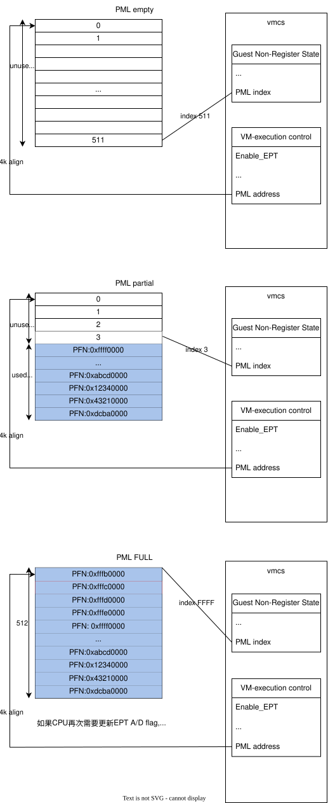

protected-mode memory management
29.3.6 Page-Modification Logging
When accessed and dirty flags for EPT are enabled, software can track writes to guest-physical addresses using a feature called page-modification logging.
当启用了 EPT 的访问和脏标志时，软件可以使用一种称为PML记录的功能来 跟踪对客户物理地址的写操作。
Software can enable page-modification logging by setting the “enable PML” VM-execution control (see Table 25-7 in Section 25.6.2). When this control is 1, the processor adds entries to the page-modification log as described below. The page-modification log is a 4-KByte region of memory located at the physical address in the PML address VM-execution control field. The page-modification log consists of 512 64-bit entries; the PML index VM-execution control field indicates the next entry to use.
软件可以通过设置“enable PML” VM-execution control（参见第 25.6.2 节的表 25-7） 来启用PML 记录。当该控制位为 1 时，处理器会按照下面描述的方式将条目添加到 PML 中。PML 是一个 4 KB 的内存区域，位于 PML 地址虚拟机执行控制字段中指定的物 理地址。PML 由 512 个 64 位条目组成；PML 索引虚拟机执行控制字段指示下一个要使 用的条目。
Before allowing a guest-physical access, the processor may determine that it first needs to set an accessed or dirty flag for EPT (see Section 29.3.5). When this happens, the processor examines the PML index. If the PML index is not in the range 0–511, there is a page-modification log-full event and a VM exit occurs. In this case, the accessed or dirty flag is not set, and the guest-physical access that triggered the event does not occur.
在允许客户物理访问之前，处理器可能会确定它首先需要为 EPT 设置访问或脏标志 （参见第 29.3.5 节）。当发生这种情况时，处理器会检查 PML 索引。如果 PML 索引不在 0-511 的范围内，就会发生PML log full event ，并且会产生 VM exit。 在这种情况下，访问或脏标志不会被设置，并且触发事件的客户物理访问也不会发生。
If instead the PML index is in the range 0–511, the processor proceeds to update accessed or dirty flags for EPT as described in Section 29.3.5. If the processor updated a dirty flag for EPT (changing it from 0 to 1), it then operates as follows:
如果 PML 索引在 0-511 的范围内，处理器会继续按照第 29.3.5 节中描述的方式更新 EPT 的访问或脏标志。如果处理器更新了 EPT 的脏标志（将其从 0 变为 1），则它会 继续执行以下操作：
The guest-physical address of the access is written to the page-modification log. Specifically, the guest- physical address is written to physical address determined by adding 8 times the PML index to the PML address. Bits 11:0 of the value written are always 0 (the guest-physical address written is thus 4-KByte aligned).
访问的 GPA 被写入PML。具体来说，GPA被写入通过将 PML address 加上 PML index 乘以 8 所确定的物理地址。写入值的第 11 到 0 位始终为 0（因此写入的GPA是 4 KB 对齐的）。
The PML index is decremented by 1 (this may cause the value to transition from 0 to FFFFH).
PML 索引减 1（这可能导致其值从 0 变为 FFFFH）。
Because the processor decrements the PML index with each log entry, the value may transition from 0 to FFFFH. At that point, no further logging will occur, as the processor will determine that the PML index is not in the range 0– 511 and will generate a page-modification log-full event (see above).
由于处理器在每次日志记录时都会将 PML 索引减 1，该值可能会从 0 变为 FFFFH。 此时，将不再进行日志记录，因为处理器会判断 PML 索引不在 0 到 511 的范围内， 并触发page-modification log-full event。
29.3.7 EPT and Memory Typing
This section specifies how a logical processor determines the memory type use for a memory access while EPT is in use. (See Chapter 12, “Memory Cache Control‚” of the Intel® 64 and IA-32 Architectures Software Developer’s Manual, Volume 3A, for details of memory typing in the Intel 64 architecture.) Section 29.3.7.1 explains how the memory type is determined for accesses to the EPT paging structures. Section 29.3.7.2 explains how the memory type is determined for an access using a guest-physical address that is translated using EPT.
这一部分说明了在使用扩展页表（EPT）时，逻辑处理器如何确定内存访问所使用的内存类型。 （有关 Intel 64 架构中的内存类型的详细信息，请参阅《Intel® 64 和 IA-32 架构软件开 发人员手册》第 3A 卷第 12 章“Memory Cache Control”。）第 29.3.7.1 节解释了如何确 定对 EPT 分页结构访问的内存类型。第 29.3.7.2 节解释了如何确定使用 EPT 翻译的 GPA 进行访问时的内存类型。
29.3.7.1 Memory Type Used for Accessing EPT Paging Structures
This section explains how the memory type is determined for accesses to the EPT paging structures. The determi- nation is based first on the value of bit 30 (cache disable—CD) in control register CR0:
这一部分解释了如何确定对 EPT 分页结构访问时的内存类型。首先，这一确定过程基于控制寄 存器 CR0 中第 30 位（disable—CD）的值：
- If CR0.CD = 0, the memory type used for any such reference is the EPT paging-structure memory type, which is specified in bits 2:0 of the extended-page-table pointer (EPTP), a VM-execution control field (see Section 25.6.11). A value of 0 indicates the uncacheable type (UC), while a value of 6 indicates the write-back type (WB). Other values are reserved.
如果 CR0.CD = 0，则用于任何此类引用的内存类型是 EPT 分页结构的内存类型， 该类型在扩展页表指针（EPTP）的位 2:0 中指定，这是一个 VM-execution control field（参见第 25.6.11 节）。值为 0 表示不可缓存类型（UC）， 而值为 6 表示写回类型（WB）。其他值是保留的。
- If CR0.CD = 1, the memory type used for any such reference is uncacheable (UC).
如果 CR0.CD = 1，则用于任何此类引用的内存类型是不可缓存的（UC）。
The MTRRs have no effect on the memory type used for an access to an EPT paging structure.
29.3.7.2 Memory Type Used for Translated Guest-Physical Addresses
The effective memory type of a memory access using a guest-physical address (an access that is translated using EPT) is the memory type that is used to access memory. The effective memory type is based on the value of bit 30 (cache disable—CD) in control register CR0; the last EPT paging-structure entry used to translate the guest- physical address (either an EPT PDE with bit 7 set to 1 or an EPT PTE); and the PAT memory type (see below):
- The PAT memory type depends on the value of CR0.PG:
- If CR0.PG = 0, the PAT memory type is WB (writeback).1
- If CR0.PG = 1, the PAT memory type is the memory type selected from the IA32_PAT MSR as specified in Section 12.12.3, “Selecting a Memory Type from the PAT.”2
The EPT memory type is specified in bits 5:3 of the last EPT paging-structure entry: 0 = UC; 1 = WC; 4 = WT; 5 = WP; and 6 = WB. Other values are reserved and cause EPT misconfigurations (see Section 29.3.3).
- If CR0.CD = 0, the effective memory type depends upon the value of bit 6 of the last EPT paging-structure entry:
- If the value is 0, the effective memory type is the combination of the EPT memory type and the PAT memory type specified in Table 12-7 in Section 12.5.2.2, using the EPT memory type in place of the MTRR memory type.
- If the value is 1, the memory type used for the access is the EPT memory type. The PAT memory type is ignored.
- If CR0.CD = 1, the effective memory type is UC.
The MTRRs have no effect on the memory type used for an access to a guest-physical address.
流程图展示
